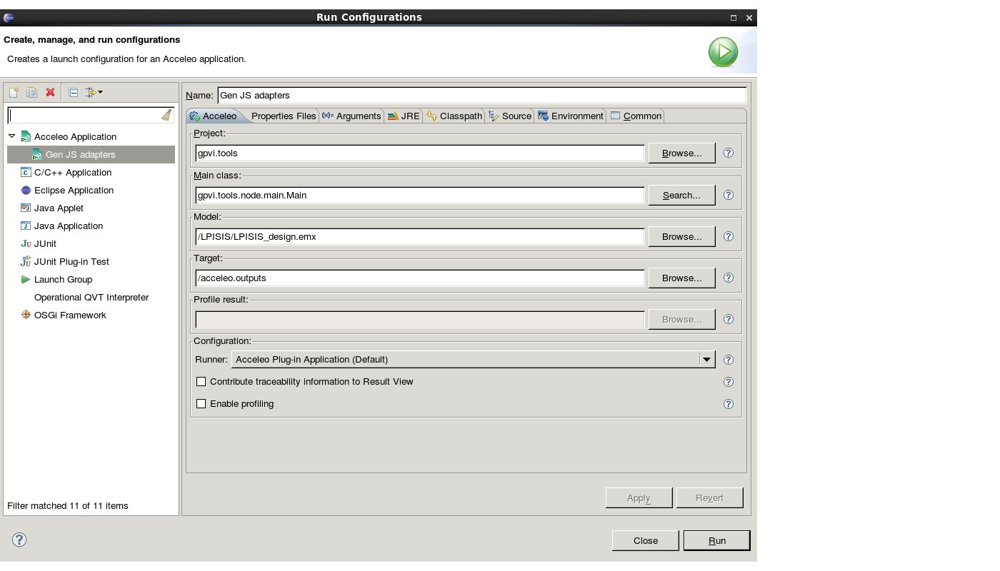

Set the workspace like the following
Right click on gpvi.tools > Properties > Java Build Path > Tab Libraries
Select JRE System Library, click on Edit
Check Execution environment, click on Environments
Select JavaSE-1.7 and check jre-1.7
If jre-1.7 is not present
On the previous page, check Alternate JRE, click on Installed JREs
Click on Add > choose Standard VM > click on Directory > /data/work/gitRepositories/LPISIS/GPCCHS/ECLIPSE_ACCELEO/jre-1.7
Restart the Configure Java Path section
Go to Run > Run Configurations and fill like the following
Click Run to generate proto/adapters
The outputs files are located in the path provided by Target in the configuration above
Once generated, ths output folder goes to the adapters files a the root of client's GPCCHS repo
Sometimes the generator is just full of crap. Check if the registerPackages in Main.java is the following.
In config.properties add the following